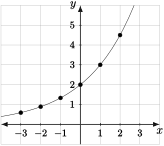

Introduce exponential in algebraic, graphical, and verbal (applied) form.
Manipulate and use different algebraic forms of exponential functions and the meanings of their associated parameters.
Find formulas for exponential functions from data (both purely numerical and in context) to solve problems.
Exponential functions are common in applications where the rate of change is not described in absolute terms, but in relative terms as a percent rate of change. For instance, suppose we say a population, \(P\text{,}\) is growing at a rate of \(50\%\) per year with an initial value of \(1000\text{.}\) This means that to find the population next year, we find the population of the current year, multiply it by \(0.5\text{,}\) and add it to the current population. Then we can construct a table of values, with the input \(t\) being measured in years:
Table5.3.1.
\(t\)
\(0\)
\(1\)
\(2\)
\(3\)
\(P\)
\(1000\)
\(1500\)
\(2250\)
\(3375\)
We can notice that the slope, which is the absolute rate of change, is not constant. Between the points \((0,1000)\) and \((1,1500)\text{,}\) the slope is \(500\text{.}\) The slope between the points \((1,1500)\) and \((2,2250)\) is \(750\text{.}\) However, if we take the ratio of consecutive outputs, we get a constant:
What this shows is that each time the input increases by \(1\text{,}\) the output gets multiplied by \(1.5\) one more time. Since repeated multiplication is denoted by an exponent, we see that
\begin{equation*}
P = 1000(1.5)^t.
\end{equation*}
Functions with this basic form are known as exponential functions.
Subsection5.3.1Intro to Exponential Functions
Definition5.3.2.Explonential Function.
An exponential function is a function of the form \(f(x) = ab^x\text{,}\) where \(a\neq 0\) and \(b>0\text{.}\)
Consider \(f(x) = 2(1.5)^x\text{.}\) We can plot some points to construct a graph of this function.

Figure5.3.4.The graph of \(y=f(x) = 2(1.5)^x\text{.}\)
We can make several observations about this graph and connect them to the algebraic form of this function.
First, notice that the \(y\)-intercept is at \((0,2)\text{.}\) This is due to the fact that \(f(0) = 2(1.5)^0\text{.}\) Since any nonzero number raised to the zero power is \(1\text{,}\) we are just multiplying \(2\) by \(1\text{.}\)
We also can notice this function is increasing as you move from left to right. In fact, you can see that each point we plotted is exactly one and a half times higher above the \(x\)-axis than the point that was plotted one unit to its left. This is because the height is multiplied by \(1.5\) each time the input increases by one unit.
If we move from right to left through negative values of \(t\text{,}\) all the outputs are less than \(2\) and getting smaller. This isn't a truly different observation than the last one, but it's a different perspective. This comes from the fact that when \(t\) is negative, we're really dividing by positive powers of \(1.5\text{.}\) (Review you exponent rules now if you need to.)
Finally, we notice that the outputs stay above the \(x\)-axis. This is because \((1.5)^t\) is always positive, as it represents repeated multiplication of a positive number. If the \(2\) in front were replaced by a negative number, then the output would never be positive. Exponential functions never change signs.
In the definition of an exponential function, we said that \(a\) cannot be zero and \(b\) had to be positive. Let's think about why we would make such restrictions.
If \(a=0\text{,}\) what simpler family of functions does \(f(x) = ab^x\) belong to?
If \(b\) is negative, what is a value of \(x\) that would make \(b^{x}\) undefined? (The answer is not zero.)
Now is a good time to once again explore how the graph of \(f(x) = ab^x\) changes when \(a\) and \(b\) change. Use the interactive graph below to change \(a\) and \(b\) and describe the changes in your own words. Again, the “math book” description follows.
\(b\) is the growth factor. Each time the input increases by one unit, the output is multiplied by another factor of \(b\text{.}\)
If \(b>1\text{,}\) then the graph diverges away from the \(x\)-axis from left to right and gets arbitrarily close to the \(x\)-axis as \(x\to-\infty\text{.}\)
If \(b<1\text{,}\) then the graph gets arbitrarily close to the \(x\)-axis as \(x\to\infty\text{,}\) and diverges away from the \(x\)-axis moving right to left.
\(a\) is the output of \(f\) when \(x=0\text{.}\) In other words, it is the \(y\)-intercept of the graph of \(f\text{.}\)
The domain of an exponential function is the set of all real numbers. What is the range? Your answer will depend of the value of \(a\text{.}\)
As with all function families, when we say that a function has a specific form, we really mean that its defining formula is equivalent to that form. Often it is the case that a function is not presented in a specific form, but algebraic manipulation shows it to be in the specified family.
Let \(f(x) = \dfrac{3(2)^{x+3}}{5^{x-1}}\text{.}\) This function is not in the form \(f(x) = ab^x\text{,}\) but we may use some exponent rules to put it in that form:
Hence we see \(a = 120\) and \(b=\frac{2}{5}\text{.}\) Alternatively, we could use a table of outputs to decide this function is exponential and find its parameters:
Table5.3.8.
\(x\)
\(0\)
\(1\)
\(2\)
\(f(x)\)
\(120\)
\(48\)
\(19.2\)
The ratios of consecutive values are equal to \(b\text{:}\)\(\frac{48}{120} = \frac{19.2}{48} =\frac{2}{5}\text{.}\) The value at \(t=0\) is \(a\text{.}\)
Generally, if you know one of the parameters of an exponential function and a point on its graph, you can solve for the other parameter. In the next section we will go into detail of how to find formulas for exponential functions from two points on the graph, similar to how we did it for linear functions. We will also see possible reasons for alternatives to the standard \(ab^x\) form.
Subsection5.3.2Forms of Exponential Functions
Often we would like to find a formula for an exponential function when the initial condition and growth rate are not known. However, we often do know some information that is somehow equivalent to two points on the graph. To understand some of the useful forms of exponential functions, let's first figure out how to find a formula given two points on the graph.
Suppose the points \((2,1)\) and \((9,4)\) are on the graph of \(y=f(x) = ab^{x}\text{.}\) We would like to determine \(a\) and \(b\text{.}\) To do this, we merely need to set up a system of equations and solve it. Using the input-output pairs, we have
Then we find \(a = \frac{1}{(\sqrt[7]{4})^{2}}\text{.}\) Thus we have \(f(x) = \frac{1}{(\sqrt[7]{4})^{2}} (\sqrt[7]{4})^x\text{.}\)
This process for finding the equation of an exponential function is straightforward, but the final answer does not show the points the graph passes through in a transparent way. Instead, we may write it in the form
Let \(f(x) = 3\left(\frac{14}{3}\right)^{\frac{x-12}{5}}\text{.}\) Find two points with integer coordinates that are obviously on the graph of \(f\text{.}\) Explain why they are obvious.
Using the last two questions as motivation, we can introduce the following form of an exponential function:
Definition5.3.12.Point-Factor-(Time Interval) Form for an Exponential Function.
An exponential function \(f\) that has the property that \(f(x_0) = S\) and grows by a factor of \(M\) over each time interval \(T\) has the form
The initial value of this function is \(\left(S(M)^{-\frac{x_0}{T}}\right)\) and its growth factor per unit increase in input is \(M^{\frac{1}{T}}\text{.}\)
This particular form of an exponential function may be thought of as analogous to the point-slope form of a linear function. However, because the formula is a bit more complicated, it may be more useful to use it only implicitly, and think about why your answer is right.
Suppose a quantity \(Q= f(t)\) grows exponentially as a function of \(t\text{,}\) where \(Q = 3\) when \(t=2\text{,}\) and \(Q\) increases by \(25\%\) every time \(t\) increases by \(20\text{.}\) Find a formula for \(Q\) in terms of \(t\text{.}\)
Since \(Q\) grows by \(25\%\) each time \(t\) increases by \(20\text{,}\) each time \(t\) increases by \(20\text{,}\) the initial quantity will be multiplied by \(1.25\text{.}\) This means the exponent of \(1.25\) should be divided by \(20\text{.}\) Since the output is \(3\) when \(t=2\text{,}\) we can put \(t-2\) as the numerator in the exponent. Thus we have
Thus we can see that this function behaves in the specified way.
Another form of an exponential function is indicated by the preceding example. Often, in real world applications, exponential functions are described by a constant percent growth rate.
Definition5.3.14.Percent Growth Rate Form of an Exponential Function.
Every exponential function \(f(x) = ab^{x}\) may be written in the form
In the function \(Q=f(t) = 3(1.25)^{\frac{t-2}{20}}\text{,}\) by what percent does \(Q\) grow per unit increase in \(t\text{?}\)
Subsection5.3.3Applications of Exponential Functions
Standard applications of exponential functions are those related to growth and decay. We will introduce these applications now, but investigate them further when we are equipped with logarithms. Logarithms will allow us to solve equations involving exponential functions.
Suppose a population of bacteria, \(P\text{,}\) in millions starts at \(P = 4\) and triples every six hours. Find a formula for \(P\) as a function of time \(t\text{,}\) in hours. By what percent does \(P\) change each hour? Using the point-factor-time interval idea, we find
\begin{equation*}
P = 4(3)^{\frac{t}{6}}.
\end{equation*}
In order to find the growth rate, we must first find the growth factor \(b\text{.}\) This is done by applying exponent rules:
\begin{equation*}
P = 4(\sqrt[6]{3})^{t}.
\end{equation*}
Hence the growth factor is \(b = \sqrt[6]{3}\approx 1.201\text{.}\) Hence the percent growth rate is about \(20.1\%\) per hour.
Cesium-137 is a radioactive isotope formed in nuclear fission. Given that it decays at a rate of \(2.27\%\) per year, what equation would you need to solve in order to find its half-life (the time it takes for half of an initial quantity to remain)?